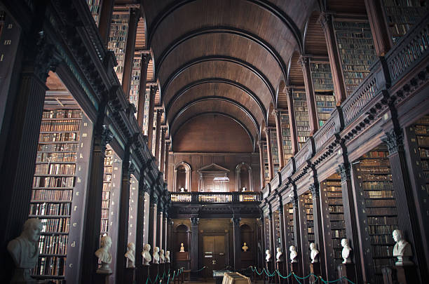

Knowledge awaits in this mysterious repository
You enter a massive library where towering shelves stretch toward a ceiling lost in shadows. Books glow with inner light, and holographic displays float in the air, showing maps and diagrams of the city. The atmosphere is thick with the scent of old paper and something more... electric.
Two paths branch from the main reading area: one leads to a tunnel system beneath the library, while another leads to a neon bridge that spans across the city. Ancient texts speak of hidden knowledge and secret passages.